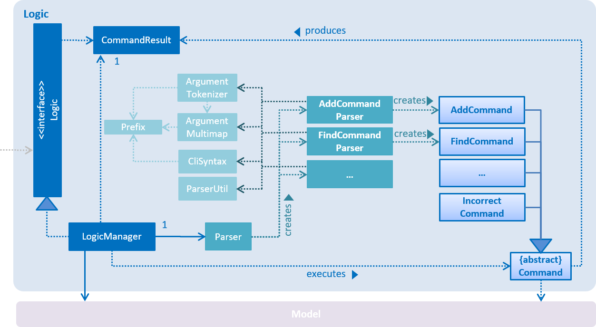

After studying this code and completing the corresponding exercises, you should be able to,
- 1. Use High-Level Designs
[LO-HighLevelDesign] - 2. Use Event-Driven Programming
[LO-EventDriven] - 3. Use API Design
[LO-ApiDesign] - 4. Use Assertions
[LO-Assertions] - 5. Use Logging
[LO-Logging] - 6. Use Defensive Coding
[LO-DefensiveCoding] - 7. Use Build Automation
[LO-BuildAutomation] - 8. Use Continuous Integration
[LO-ContinuousIntegration] - 9. Use Code Coverage
[LO-CodeCoverage] - 10. Apply Test Case Design Heuristics
[LO-TestCaseDesignHeuristics] - 11. Write Integration Tests
[LO-IntegrationTests] - 12. Perform System Testing
[LO-SystemTesting] - 13. Automate GUI Testing
[LO-AutomateGuiTesting] - 14. Apply Design Patterns
[LO-DesignPatterns] - 15. Use Static Analysis
[LO-StaticAnalysis] - 16. Do Code Reviews
[LO-CodeReview]
1. Use High-Level Designs [LO-HighLevelDesign]
Note how the Developer Guide describes the high-level design using an Architecture Diagrams and high-level sequence diagrams.
2. Use Event-Driven Programming [LO-EventDriven]
Note how the Developer Guide uses events to communicate with components without needing a direct coupling. Also note how the EventsCenter class acts as an event dispatcher to facilitate communication between event creators and event consumers.
3. Use API Design [LO-ApiDesign]
Note how components of AddressBook have well-defined APIs. For example, the API of the Logic component is given in the Logic.java

Resources
-
A three-minutes video of designing architecture of and discovering component APIs for a Game of Tic-Tac-Toe.
4. Use Assertions [LO-Assertions]
Note how the AddressBook app uses Java asserts to verify assumptions.
Resources
-
Programming With Assertions - a guide from Oracle.
Exercise: Add more assertions
-
Make sure assertions are enabled in Eclipse by forcing an assertion failure (e.g. add
assert false;somewhere in the code and run the code to ensure the runtime reports an assertion failure). -
Add more assertions to AddressBook as you see fit.
5. Use Logging [LO-Logging]
Resources
-
Tutorials
-
Logging using java.util.logging - a tutorial by Jakob Jenkov
-
Logging tutorial - a more detailed tutorial from Oracle.
-
-
Logging best practices
6. Use Defensive Coding [LO-DefensiveCoding]
Note how AddressBook uses the ReadOnly* interfaces to prevent objects being modified by clients who are not supposed to modify them.
Exercise: identify more places for defensive coding
Analyze the AddressBook code/design to identify,
-
where defensive coding is used
-
where the code can be more defensive
7. Use Build Automation [LO-BuildAutomation]
Resources
-
Tutorials
-
Getting started with Gradle (Java) - a tutorial from the Gradle team
-
Another tutorial - from TutorialPoint
-
Exercise: Use gradle to run tasks
-
Use gradle to do these tasks (instructions are here) : Run all tests in headless mode, build the jar file.
Exercise: Use gradle to manage dependencies
-
Note how the build script
build.gradlefile manages third party dependencies such as ControlsFx. Update that file to manage a third-party library dependency.
8. Use Continuous Integration [LO-ContinuousIntegration]

Resources
-
Tutorials
-
Getting started with Travis - a tutorial from the Travis team
-
9. Use Code Coverage [LO-CodeCoverage]
Note how our CI server Travis uses Coveralls to report code coverage. ( ) After setting up Coveralls for your project, you can visit Coveralls website to find details about the coverage of code pushed to your repo. Here is an example.
) After setting up Coveralls for your project, you can visit Coveralls website to find details about the coverage of code pushed to your repo. Here is an example.
Exercise: Use EclEmma to measure coverage locally
-
Install the EclEmma Eclipse Plugin in your computer and use that to find code that is not covered by the tests. This plugin can help you to find coverage details even before you push code to the remote repo.
10. Apply Test Case Design Heuristics [LO-TestCaseDesignHeuristics]
The StringUtilTest.java
class gives some examples of how to use Equivalence Partitions, Boundary Value Analysis, and Test Input Combination Heuristics to improve the efficiency and effectiveness of test cases testing the StringUtil.java class.
Exercise: Apply Test Case Design Heuristics to other places
-
Find answers to these questions:
-
What is an Equivalence Partition? How does it help to improve E&E of testing?
-
What is Boundary Value Analysis? How does it help to improve E&E of testing?
-
What are the heuristics that can be used when combining multiple test inputs?
-
-
Use the test case design heuristics mentioned above to improve test cases in other places.
11. Write Integration Tests [LO-IntegrationTests]
Consider the StorageManagerTest.java class.
-
Test methods
prefsReadSave()andaddressBookReadSave()are integration tests. Note how they simply test if TheStorageManagerclass is correctly wired to its dependencies. -
Test method
handleAddressBookChangedEvent_exceptionThrown_eventRaised()is a unit test because it uses dependency injection to isolate the SUTStorageManger::handleAddressBookChangedEvent(…)from its dependencies.
Compare the above with LogicManagerTest. Many of the tests in that class (e.g. execute_add_* methods) tests are neither integration nor unit tests. They are a integration + unit tests because they not only checks if the LogicManager is correctly wired to its dependencies, but also checks the working of its dependencies. For example, the following two lines test the the LogicManager but also the Parser.
@Test
public void execute_add_invalidArgsFormat() throws Exception {
...
assertCommandBehavior("add Valid Name 12345 e/valid@email.butNoPhonePrefix a/valid, address", expectedMessage);
assertCommandBehavior("add Valid Name p/12345 valid@email.butNoPrefix a/valid, address", expectedMessage);
...
}Exercise: Write unit and integration tests for the same method.
-
Write a unit test for a a high-level methods somewhere in the code base.
-
Write an integration test for the same method.
12. Perform System Testing [LO-SystemTesting]
Note how tests below src/test/java/guitests package (e.g AddCommandTest.java) are system tests because they test the entire system end-to-end.
13. Automate GUI Testing [LO-AutomateGuiTesting]
Note how this project uses TextFX library to automate GUI testing, including headless GUI testing.
14. Apply Design Patterns [LO-DesignPatterns]
Here are some example design patterns used in the code base.
-
Singleton Pattern :
EventsCenter.javais Singleton class. Its single instance can be accessed using theEventsCenter.getInstance()method. -
Facade Pattern :
StorageManager.javais not only shielding the internals of the Storage component from outsiders, it is mostly redirecting methods calls to its internal components (i.e. minimal logic in the class itself). Therefore,StorageManagercan be considered a Facade class. -
Command Pattern : The
Command.javaand its sub classes implement the Command Pattern. -
Observer Pattern : The event driven mechanism used by this code base employs the Observer pattern. For example, objects that are interested in events need to have the
@Subscribeannotation in the class (this is similar to implementing an<<Observer>>interface) and register with theEventsCenter. When something noteworthy happens, an event is raised and theEventsCenternotifies all relevant subscribers. Unlike in the Observer pattern in which the<<Observerable>>class is notifying all<<Observer>>objects, here the<<Observable>>classes simply raises an event and theEventsCentertakes care of the notifications. -
MVC Pattern :
-
The 'View' part of the application is mostly in the
.fxmlfiles in thesrc/main/resources/viewfolder. -
Modelcomponent contains the 'Model'. -
Sub classes of
UiPart(e.g.PersonListPanel) act as 'Controllers', each controlling some part of the UI and communicating with the 'Model' via aLogiccomponent which sits between the 'Controller' and the 'Model'.
-
-
Abstraction Occurrence Pattern : Not currently used in the app.
Exercise: Discover other possible applications of the patterns
-
Find other possible applications of the patterns to improve the current design. e.g. where else in the design can you apply the Singleton pattern?
-
Discuss pros and cons of applying the pattern in each of the situations you found in the previous step.
Exercise: Find more applicable patterns
-
Learn other Gang of Four Design patterns to see if they are applicable to the app.
15. Use Static Analysis [LO-StaticAnalysis]
Note how this project uses the CheckStyle static analysis tool to confirm compliance with the coding standard.
Other popular Java static analysis tools:
Exercise: Use the CheckStyle Eclipse plugin
-
Install the CheckStyle Eclipse plugin and use it to detect coding standard violations.
16. Do Code Reviews [LO-CodeReview]
Here are some things you can comment on when reviewing code:
-
Read the code from the perspective of a new developer. Identify parts that are harder to understand and suggest improvements.
-
Point out any coding standard violations.
-
Suggest better names for methods/variables/classes.
-
Point out unnecessary code duplications.
-
Check if the comments, docs, tests have been updated to match the code change.
-
Check for violation of relevant principles such as the SOLID principles.
-
Point out where SLAP can be improved. e.g. methods that are too long or has too deep nesting.
-
Suggest any other code quality improvements.
Resources
-
Code Review Best Practices - Blog post by Kevin London
-
Why Code Reviews Matter - An article by Atlassian
Exercise: Review a PR
-
Review a GitHub PR created by a team member.